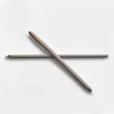

하루 10장으로 시작하는 평생 독서 습관 만드는 4단계 법칙
사진: https://kaboompics.com/ / Pexels (무료 이미지, 출처 표기)
왜 매번 독서 결심은 작심삼일로 끝날까?
올해는 꼭 책을 많이 읽겠다고 다짐하지만, 몇 페이지 읽다가 스마트폰을 만지작거린 경험이 누구나 있을 겁니다. 독서 습관을 기르지 못하는 것은 여러분의 의지력 부족 때문이 아닙니다. 인간의 뇌는 기본적으로 에너지를 아끼기 위해 새로운 변화를 거부하도록 설계되어 있습니다.
따라서 의지에만 의존하기보다, 뇌가 눈치채지 못할 정도로 아주 작은 행동부터 시작하는 과학적 접근이 필요합니다. 하루에 책 1권을 읽겠다는 무리한 계획 대신, 쉽게 실천하고 지속할 수 있는 구체적인 시스템을 만드는 것이 핵심입니다.
포기하지 않는 독서 습관 형성 4단계
행동과학 전문가들이 제안하는 가장 확실한 습관 형성 이론에 기반하여, 일상에 자연스럽게 독서를 스며들게 하는 4단계 법칙을 소개합니다.
- 1단계: 난이도를 극단적으로 낮추기 - 하루 10쪽, 혹은 하루 5분만 읽기로 시작하세요. 목표가 쉬워야 매일 할 수 있고, 일단 책을 펴면 더 읽게 되는 경우가 많습니다.
- 2단계: 습관 쌓기(Habit Stacking) 활용하기 - 이미 매일 하고 있는 고정적인 행동 뒤에 독서를 붙이세요. 예를 들어 '아침에 커피를 내린 직후', '퇴근길 지하철에 앉자마자' 책을 펴는 식입니다.
- 3단계: 환경을 직관적으로 만들기 - 스마트폰은 보이지 않는 곳에 두고, 책은 침대 머리맡, 식탁, 가방 속 등 손과 눈이 자주 닿는 곳에 두어 접근성을 높입니다.
- 4단계: 즉각적인 보상 제공하기 - 독서를 마친 후 달력에 스티커를 붙이거나 독서 기록 앱에 페이지를 입력해 성취감을 시각적으로 확인하세요.
종이책 vs 전자책 vs 오디오북: 나에게 맞는 매체 비교
자신의 라이프스타일에 맞는 매체를 선택하는 것만으로도 독서 효율이 배로 늘어납니다. 각 매체의 특징을 비교해 보고 나에게 가장 편안한 도구를 선택해 보세요.
독서 습관을 망치는 3가지 흔한 실수
의욕 넘치게 시작한 독서가 스트레스가 되지 않으려면 아래의 세 가지 함정을 반드시 피해야 합니다.
첫째, 재미없는 책을 억지로 끝까지 읽는 것입니다. 베스트셀러나 추천 도서라도 본인에게 흥미가 없다면 과감히 덮고 다른 책을 찾으세요. 독서는 공부가 아니라 즐거운 경험이어야 합니다.
둘째, 완독에 집착하는 태도입니다. 책의 모든 문장을 정독할 필요는 없습니다. 나에게 필요한 부분, 흥미가 가는 목차 위주로 발췌독을 하는 것도 훌륭한 독서입니다.
셋째, 처음부터 어려운 고전이나 전문 서적을 고르는 것입니다. 쉬운 소설, 에세이, 만화책 등 무엇이든 좋습니다. 일단 활자와 친해지는 단계에서는 내가 가장 편하게 읽을 수 있는 분야를 선택하는 것이 좋습니다.
초보 독자를 위한 지속 가능한 실천 팁
책을 고르는 안목이 부족하다면, 도서관이나 대형 서점에 가서 표지와 목차만 훑어보는 연습부터 시작해 보세요. 또한 한 번에 한 권만 읽어야 한다는 고정관념에서 벗어나, 여러 분야의 책을 공간마다 다르게 두고 동시에 조금씩 읽는 '병렬 독서'도 지루함을 덜어주는 좋은 방법입니다. 나만의 편안한 속도를 유지하며 꾸준히 나아가는 것이 가장 중요합니다.
🔗 이 글도 함께 보면 좋아요: 미루는 습관 고치는 법, '5초 법칙'과 의지력 없이 시작하는 4단계
관련 추천 상품
이 포스팅은 쿠팡 파트너스 활동의 일환으로, 이에 따른 일정액의 수수료를 제공받습니다.
한눈에 보는 상품 목록

e북 리더기
e잉크 액정을 사용해 눈의 피로를 덜어주고, 수천 권의 책을 가볍게 휴대할 수 있어 독서량을 늘려줍니다.
접이식 독서대
바른 자세를 유지하도록 도와주어 장시간 독서 시 목과 어깨에 가해지는 통증을 줄여줍니다.
북라이트
야간이나 어두운 조명 아래에서도 주변 눈치 없이 편안하게 책을 읽을 수 있도록 도와줍니다.